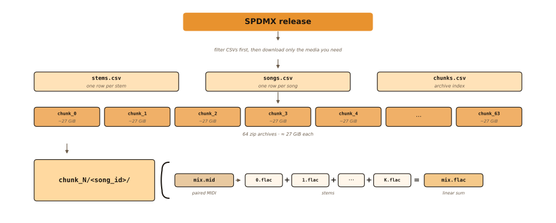

SPDMX: Public-Domain Multitrack Stem Audio at Scale
University of California, San Diego
- —songs
- —stems
- —hours
- —chunks
Recorded multitrack stems remain scarce for modern separation and generative audio models, while large synthesized alternatives often depend on closed commercial instruments. SPDMX is a public-domain multitrack stem corpus from PDMX: scores are cleaned, rendered with open soundfonts and selective MIDI-DDSP, then loudness- and velocity-aware mixed into mono stems and mixes at 44.1 kHz—sharing song identity with PDMX so symbolic metadata stays usable alongside the audio.
chunk_N / song_id /
- 0.flac … K.flac
- mix.flac
- mix.mid
44.1 kHz · mono stems · mono mix · FLAC · −23 LUFS
What’s on disk
Filter with the CSV tables first, then download only the ~27 GiB chunk archives you need. Each song directory holds stems, a linear-sum mix, and paired MIDI.

chunk_N archives,
then open chunk_N/<song_id>/ for stems, mix, and paired MIDI.
Download recipe
- Get
stems.csv,songs.csv,chunks.csv. - Filter songs (e.g.
subset:bdgp) then restrict stems. - Read distinct
chunkids and fetch thosechunk_N.zipfiles. - Unzip beside the CSVs so
./chunk_N/<song_id>/…resolves.
Per-song contents
- track — contiguous index after dropping empty PDMX tracks (
{track}.flac). - program / is_drum — General MIDI identity after name-based correction.
- mix.flac — raw linear sum of stems (mono).
- mix.mid — paired MIDI aligned to the stems.
Songs per chunk
Archives are sized for ~27 GiB downloads, not equal song counts. Longer or denser songs pack fewer titles into a chunk, so bar heights vary even though download cost stays roughly uniform.
Dataset at a glance
Scale and inventory plots that did not fit in the paper.
Scale vs peers
On mix duration, SPDMX is about an order of magnitude beyond Slakh2100 and two orders beyond recorded multitrack sets: open synth stems at symbolic-corpus scale rather than studio-session scale.
Stems per song (multi-stem)
GM classes (songs)
Piano covers most of the catalog; ensemble and orchestral families form a smaller but still substantial second tier, while niche GM classes appear in only a thin slice of songs.
Top programs (stems)
Acoustic Grand alone accounts for the majority of stems, mirroring piano-heavy public-domain scores, with choir and drums as the next clear peaks.
Render recipe
Song length (mix)
Listen
Clips from the release. Play starts every stem in sync; Mute and Solo change who you hear. Only one demo plays at a time.
Citation & license
Cite SPDMX if you use the audio (stems or mixes). Also cite PDMX if you use anything beyond the paired MIDI shipped with SPDMX (for example MusicXML, PDMX metadata, or other PDMX-only fields).
SPDMX
@inproceedings{long2026spdmx,
title={{SPDMX}: Public-Domain Multitrack Stem Audio at Scale},
author={Long, Phillip and Escoto, Eduardo and McAuley, Julian and Novack, Zachary},
booktitle={ICASSP},
year={2026},
note={to appear}
}PDMX
@inproceedings{long2024pdmx,
author={Long, Phillip and Novack, Zachary and Berg-Kirkpatrick, Taylor and McAuley, Julian},
booktitle={ICASSP 2025},
title={{PDMX}: A Large-Scale Public Domain MusicXML Dataset for Symbolic Music Processing},
year={2025},
pages={1-5},
doi={10.1109/ICASSP49660.2025.10890217}
}
Release license: CC BY 4.0 (PDMX scores are public domain; see the dataset
LICENSE). Project page:
pnlong.github.io/SPDMX.